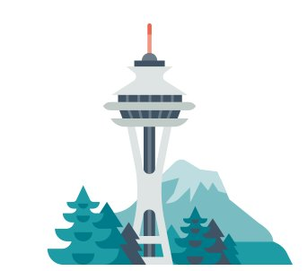
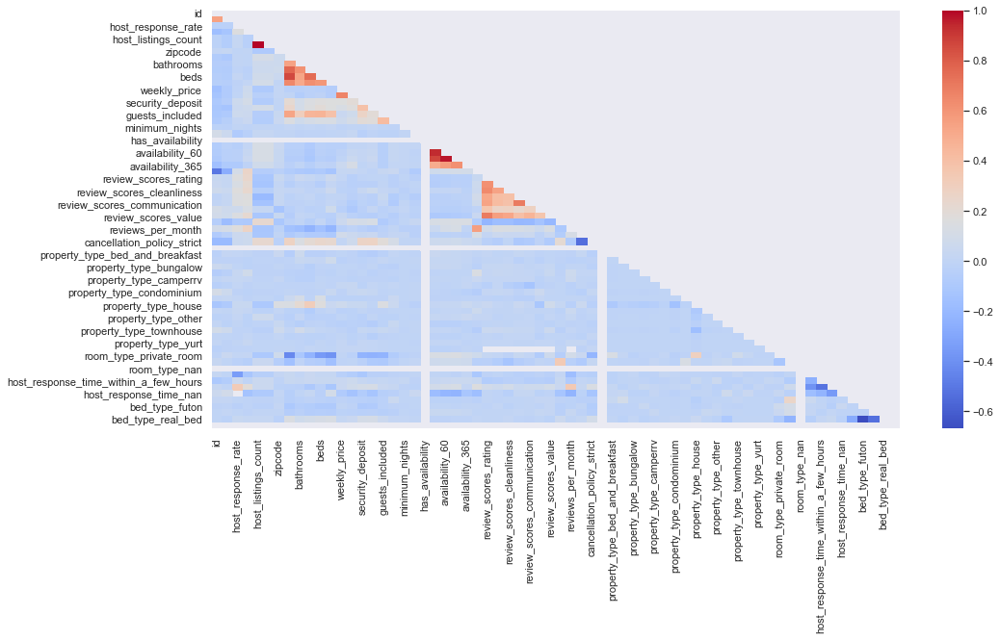
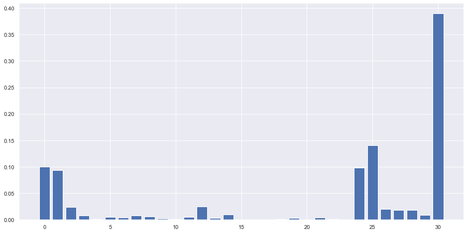
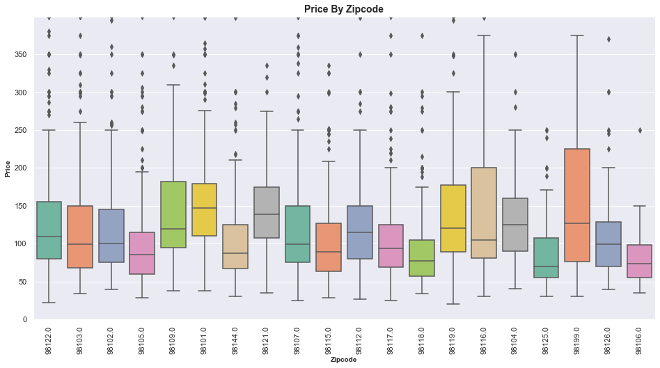

So You Want To Be A Seattle AirBNB Mogul.
Maybe you've taken a vacation and used a service like AirBNB or VRBO to book your rental.
You enjoyed your experience and decided, that doesn't look so hard. You live in the greater
Seattle Area and maybe have a property or some money. You want to be successful and by that
you mean have a well priced option or options and receive high ratings. Where should you
start, what sorts of units should you be looking at. What characteristics of those units
bring in top dollar?
Well, here's a place to start. I analyzed a tranche of data concerning AirBNB and tried to
figure out some answers to those questions. The questions I looked at were:
1. Are there some features that correlate to higher ratings or satisfaction?
2. Is there a pattern to be found in the types of hosts?
3. Are there certain features that translate to better pricing?
Bonus Question: Are there better zip codes for prices?
Let's investigate each one in turn.

Are there some features that correlate to higher ratings or satisfaction?
I began, after formatting and cleansing the data, by looking at what sort of features a
property might have that would correlate to higher ratings or satification. Heatmaps didn't
really tell me too much. There were some correlations with the rapidness of response and the
number of reviews per month. But nothing that looked too strong. I then ran the data through
a series of algorithms to see if the computer was smarter than my eyes (quick aside, it is).
What I found was interesting. Price and rating directly correlated in the algorithms. Other
major determinents were host response rate and the number of listings a host had. Finally,
number of bedrooms, bathrooms and a property type of house all were strong predictors.

Is there a pattern to be found in the types of hosts?
Next I looked at are there some types of hosts that got higher ratings or prices. As noted
above, rapidness of response (within a few hours was the strongest), having a larger number of
listings seemed affect the higher ratings.
Are there certain features that translate to better pricing?
Finally, I took the same algorithms above and turned the question over to pricing to see if
there were some determinant items there. As noted, high ratings for the host correlated with
price. Some negative factors were found affecting the price for condominiums and tents. But
otherwise I saw similar outcomes with host responses having a factor in predicting higher
prices, as well as number of bathrooms, bedrooms, and a property type of house.

Bonus Question: Are there better zip codes for prices?
Just for grins, I took a look at the data from another angle. Which zipcodes would provide the
best pricing options. Median-wise it looked like 98199, the Magnolia and Magnolia Village area
was as strong, contender with a high median for nightly pricing. Two other strong neighborhoods
where 98116, West Seattle and 98109, Westlake/Cascade. These had strong median prices for nightly
rentals.
So what if you still want to be an AirBNB mogul?
I'm not sure pricing high and hoping for good ratings a solid solution. But, renting a whole
house type property with numerous rooms and bathrooms would be a good start. Being a
responsive host who responds in less than a few hours will keep your ratings up. And finally,
reinvest your income in procurring multiple properties, as that might correlate to higher
ratings and prices.